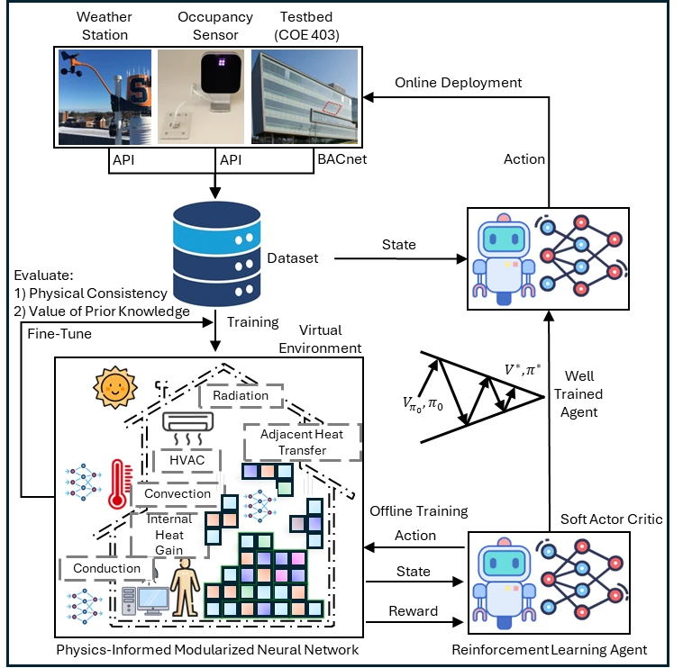
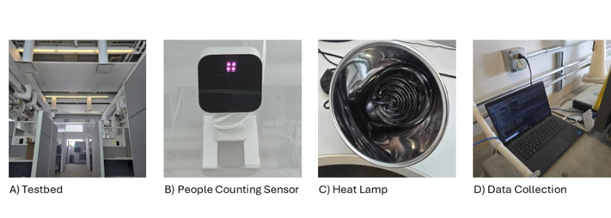
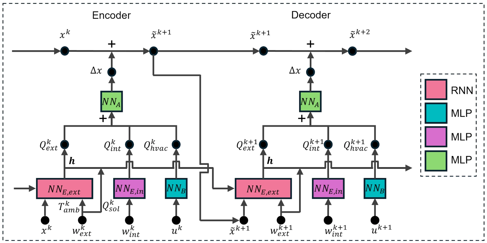
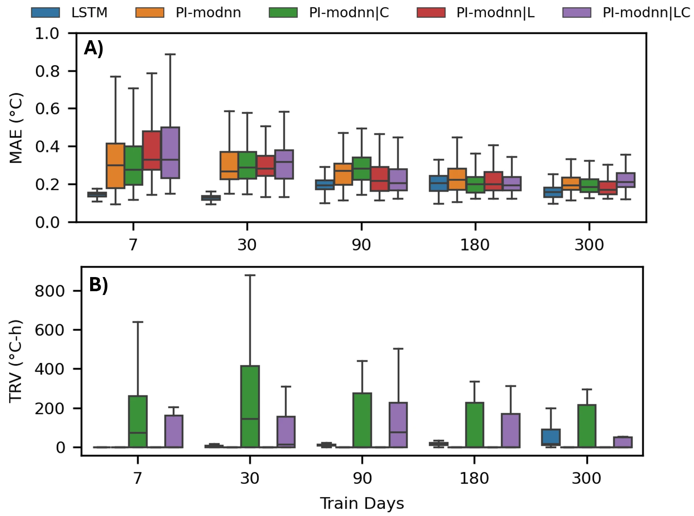
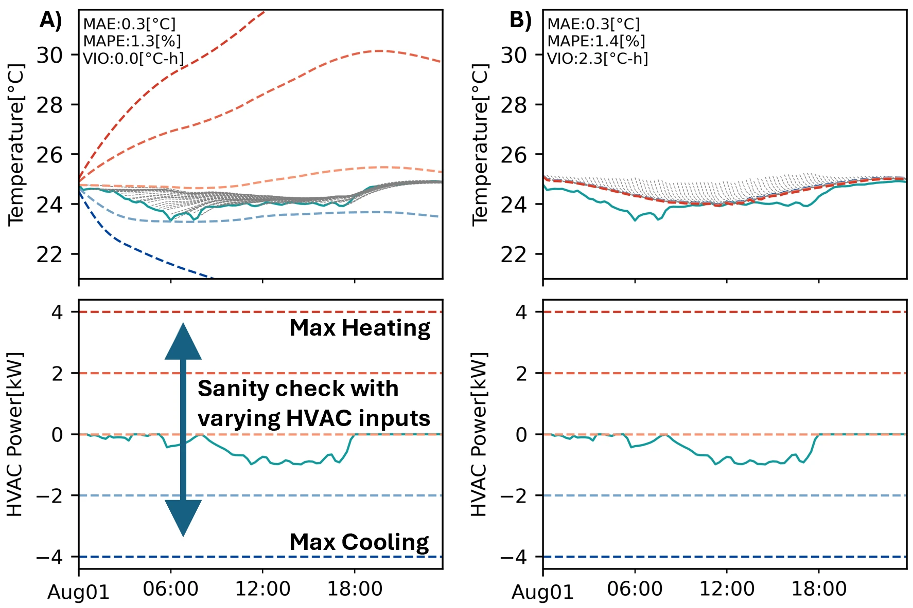
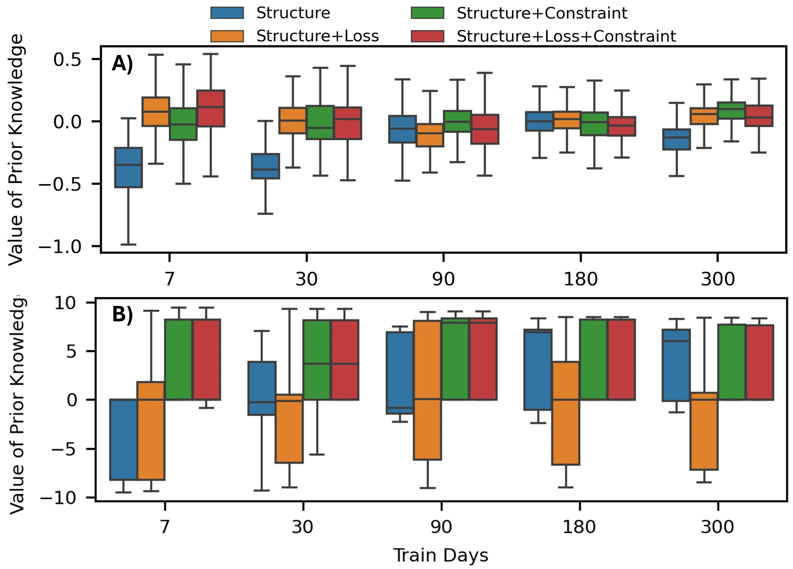

PI-ModNN: a physics-informed modular building model
The suite's third component is a physics-informed modularized neural network (PI-ModNN) that learns a building's thermal dynamics from data while respecting physical laws, so it can serve as a safe training environment for reinforcement learning agents. This page summarizes the model, how it is evaluated, and what we found. It builds on Jiang & Dong, Patterns 2024, which has the full method.
- 24-hour-ahead prediction error of 0.30 °C (MAE), on par with an LSTM (0.32 °C).
- With hard physical constraints the model has zero temperature-response violations: more cooling always lowers temperature. The LSTM fits the data just as well but barely responds to the HVAC input, which makes it unsuitable for control.
- Accuracy keeps improving with more training data, across heating and cooling seasons.
- Physics priors are not automatically helpful: the hard constraint improved consistency without hurting accuracy, while the knowledge-guided loss mostly did not help.
Framework
Measured data (HVAC operation, indoor conditions, weather and occupancy) are used to train the PI-ModNN. The model is checked for accuracy and physical consistency, then used as a virtual environment for offline training of a deep RL agent (soft actor-critic). The trained agent is deployed in the real building through the building management system.

Testbed and data
The testbed is a student office (maximum occupancy 10) served by a dedicated AHU–VAV system. HVAC data were collected over BACnet, and space temperature, solar radiation, outdoor temperature and occupancy counts through an API, at 15-minute intervals from September 2022 onward. After the office was vacated in 2024, heat lamps (150 W per simulated occupant) were used to reproduce internal heat gains.

Model
The model is a state-space time stepper that predicts space air temperature for multiple steps ahead from outdoor temperature, solar radiation, time features, HVAC thermal load and past temperatures. Following the discretized heat balance, separate modules estimate each heat-flow term, and a residual connection adds the learned heat input to the previous state:
| Module | Network | Role |
|---|---|---|
| External heat transfer | RNN | Envelope heat exchange; the hidden state captures thermal inertia |
| Internal heat gains | MLP | Schedule-like gains from occupants, lighting and equipment |
| HVAC | MLP | Maps control inputs to HVAC heat transfer |
| Thermal dynamics | MLP | Learns the unknown thermal capacity and integrates heat flow over time |

Physics enters the model in three ways:
- Structure: modules mirror physical heat-transfer terms, and the network learns temperature changes rather than static mappings.
- Knowledge-guided loss: a short-term variation term (weight 0.3) asks the model to reproduce per-step temperature changes, not just the overall trend.
- Hard constraints: the gradient of temperature with respect to control and disturbance inputs is constrained to be non-negative, so heating always warms and cooling always cools.
Evaluation
Each model is evaluated on three axes:
- Accuracy: mean absolute error of 24-hour (96-step) rolling predictions.
- Physical consistency: a sanity check that re-runs predictions with HVAC power at −4, −2, 0, +2 and +4 kW and accumulates any response in the wrong direction as a temperature-response violation (TRV).
- Value of prior knowledge: how much each physics prior changes accuracy and consistency (rule importance).
Five configurations were compared (an LSTM baseline and PI-ModNN with and without the loss and the constraints), each trained 30 times on 7, 30, 90, 180 and 300 days of data and tested on August 2024.
Results

All models are accurate, but they differ sharply in consistency. Models with hard constraints have zero violations at every training-set size. The LSTM's violations grow as training data become more diverse (both seasons, varied occupancy), because it learns statistical correlations rather than the underlying heat transfer.


Physics priors mattered most for consistency. Structural priors needed enough data to pay off, the hard constraint helped consistently, and the knowledge-guided loss was mostly neutral or negative. Priors therefore need to be chosen and validated, not assumed beneficial.
In the benchmark
In the paper, the PI-ModNN is trained on SB4 data (January 2023 to August 2024). Its modular design makes it easy to adapt to new buildings: modules can be swapped (for example, an RNN HVAC module for hydronic systems with thermal lag) or driven by alternative inputs when sensors are missing.